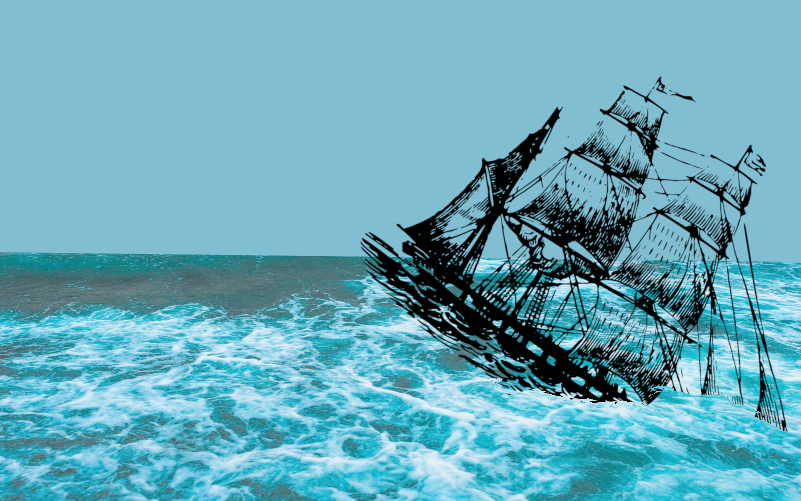
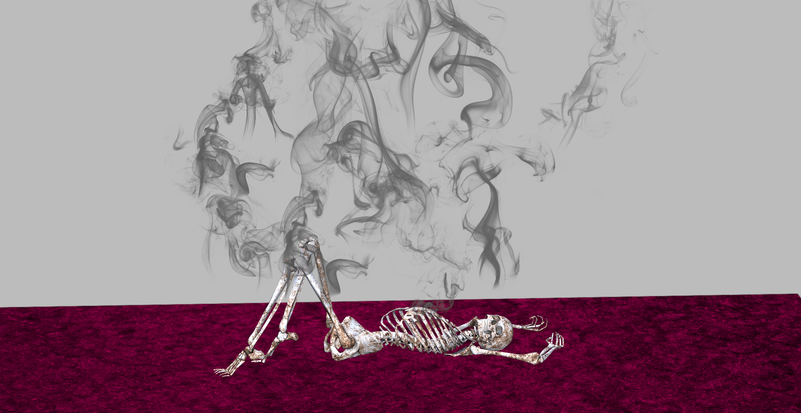

Existentia (c'est la vie, ma chere)
- Myth1
- My nymph
- A spell over a garden plant2
- Apologia pro amor3
- Exuro4
- Temperance5
- Misconceptions
- Of love and madness7
Myth
 Trust not my charming elfish song,
Trust not my charming elfish song,
let dreams be sleep, and world be gone.
You are not safe around these woods
where evil spirits live and brood,
you should have run while you still could.
***
Avert your eyes; you must not
look at me. As voices dot
your sleep with rose petals and leaves,
laying shells to your head for seas
to solace your heart and lead you to sleep,
I look into your closed eyes, your deep
soul, kind and tender, guarded by your eyelids.
You are the essence of beauty world forbids,
reality shaken into entropy by existence
of perfection of lips that are not to be kissed. Tense
and vulgar are tense and voice of the phrase, yet
sanity discovers the Big Bang in tête-a-tête
we won’t ever have. You are not to come
to my doorstep, the sea shore and numb
with my overflow thick forest. Caress
of your fingers is ecstasy, largesse
of the Universe does not extend to permitting
me. I tremble in contempt at the thought of committing
such an atrocity as drowning in your ocean
or inhaling your flawless scent. Your caution
is non-existent, trust fatally unreserved. Heed
my warning and run; I see you bleed
under my thorn, enthralled, you do not plead
for salvation. I am starved for the mead
and wine of your sorrow and pleasure.
In the Bard’s words, measure for measure,
yet I have nothing to give to Astraea, my sea
dry as my chapped lips. I loathe the glee
that bursts in my chest when I see the naked skin
of your chaste wrist. Your neck and heart, pristine,
have never known my touch. I feel the metal
of your liquor on my tongue and revel
in the passion that consumes me whole.
You are bewitched, I wish to save the soul
that lead Ananke to my dwelling; her curse
will not wear off with your sleep, my verse
as young as the night, too green to catch
the harmony of you; such grace can match
the taste of nectar and must not decay
under the sky. C’est mon debut: I pray.
No god will speak to me, my life akin
to the emerging bruises on your skin;
the fruit that leads the path to carnal sin,
you, surely, are as white and chaste within.
While Pothos casts his cruellest of spells,
oh, let me find a way, let me rebel,
not spoil thee with wicked noxious touch;
desire clouds my vision, lust as hutch
encaptures me; the pantheon be damned
if I let thee rot; with my own hand
I close your neck that pearls would only rob
of beauty; bless, my darling, not a sob
escapes your lips that I bend down to kiss
to steal your voice and breath and grant you bliss.
I drink you in, your spirit in my core
and beauty in my arms. Forevermore
thou will be beautiful and young and chaste at heart;
thy body’s fate’s to know my black art.
Last edit April 10th 2018
My nymph
My lovely forest nymph to whom in beauty there is no rival,pray for mortal souls,
especially your own, as I’ve noticed a certain look
you give me on the sly.
you look at me as if
I’m your salvation,
your hero,
god,
and other epithets;
you should know better
now.
I’m a threat;
I want you
to myself and
I’ll do things that higher power never so intended that they be out of love or good intention
of jealousy.
So I’ll let you come closer and then
entrap you with my melody.
You’ll never leave, my nymph, and as intended,
you’ll stay forever
by my side in love. But as it is, I see that
you pretended
to be content and now you want to leave.
I know the shallow nature of the pretty and beautiful who catch another’s
eye.
And yours got caught,
and now I can’t deny
that you won’t stay with me out of pity
or love.
Forgive me future trespasses, and in thy orisons remember all my sins.
Thine eye offended thee; I pluck it out.
The girl with one eye has to stay with me.
Last edit March 11th 2019
A spell over a garden plant
Listen to me, mother,listen.
All we are is cruising in an ocean of despair.
A sister, a brother,
no clue as to what’s fair.
Keep them happy and well.
All we ever have is each other
and anything that we share,
so each one’s a lover,
so everyone’s taking care.
Keep them safe and sound.
There’s no other place to call home,
the warmth is sold out,
the world’s cold as stone.
But no one’s without
a mother.
Keep them alive and loved.
Listen to me, mother.
A sister, a brother,
make sure they’re here,
and as for me, dear...
Keep them well.
Last edit July 17th 2017
Apologia pro amor
 Unannounced, blueskicks down my door – never
before has life sucked out
as much – leaves
mint and metal on my tongue,
leaves wanting more, leaves
fall beside my empty
ashtray, “mother, I
cannot weave.”
Longing, anxiety, expectations fill
relationships to their brinks. I
cannot weave Golden Fleece, sweet
mother, my ship
sinks.
Last edit May 31st 2018
Exuro
 Unannounced, the blueskicks down my door, starts
tearing the chords apart, hurls
the piano part across
the kitchen table, leaves
mint and metal on my tongue,
leaves me bleeding on the floor, leaves
fall on the windowsill beside my polished
ashtray. Out of burnt
and wasted leaves I
compose a shrine to
all that is dead to me. No time
like now
to oxidize my soul. Ash
seeps into the corridor.
Last edit June 14th 2018
Temperance
Our song is like a wine, my dear.On hallowed ground,
we cannot step on the forever despaired sphere
that holds us down.
We do not fret for our floral quality,
they’ll rise as usual,
yet as we sigh together audibly,
we realise we are delusional.
As we seek balance in the universe,
my precious flower,
I’ll plant you for growth in my moving verse,
and as mysterious as moon's reverse,
know the sad hour.
Last edit September 24th 2017
Misconceptions
If we have a date in Constantinople,you’ll be waiting in Istanbul.
I constantly miss you and miss your
timing. I miss what you say at the end
of your lines, or what you don’t say at
all. I mess up on the rhythm of my
lines. I always have a bit still left
over, of what I need to say…
We mess up on each other’s
timing, and we keep
finishing each other’s
sentences with all the wrong
words. We are an eon
apart every time we
speak, and we are moving
in the wrong directions.
And whatever we tell each other gets
misconstrued; so if I say, love you, you hear,
fuck off, and if I say, fuck off, you hear,
love me; and if I try to hug you, you
twirl away, but if I’m playing with a knife, you
run into my closed cold arms.
And if we have a date in Constantinople,
you’ll be waiting in Istanbul.
Last edit March 6th 2019
Of love and madness
Entranced by gentle glow of the light,I let myself be led to summer glory.
Relapse means I might never be alright,
But with a breath I start another story
Of anything and everything at once,
Whilst keeping secrets from my self-perception.
And as I cry, the nightmares start to dance
And chant as every single recollection
Is written off as side of medication,
And stars start screaming out, shining in
to bedroom's window, and the incantations
illuminated, light the more serene
the more it is the only stars' salvation
that's brought upon them in the death of still
and universal hum: they burn away
while their silent screams just plead to stay.
while their silent screams just plead to stay.
Ahoy, my fair warrior, behold,
My lady, sign of full compassion.
And thus I name thee queen, now not cold,
but merciless, the dame of my confessions.
My love, my queen, allow me a kiss
Before my soul fails to exist,
Before the universe my screams can cease
To hear let me go in bliss.
My love, my queen, allow thy fair knight
A kiss of love, thy bliss and death in fight.
A kiss of love, thy bliss and death in fight.
Last edit February 3rd 2018